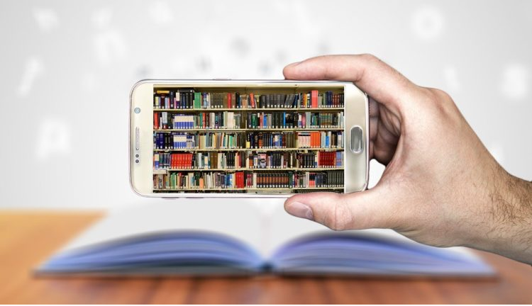

Nesta data, 23/abril, instituída em 1995 pela Organização das Nações Unidas para a Educação, Ciência e Cultura
(UNESCO) por marcar o aniversário de morte de dois grandes nomes da literatura universal, William Shakespeare e
Miguel de Cervantes, não poderíamos deixar de refletir sobre a importância do livro e sobre as limitações para seu
acesso, que estão tentando impor aos brasileiros sob a alegação de que somente a “elite” gosta de ler.
Mas, investir na formação de leitores e na democratização do acesso ao livro é muito ameaçador para um projeto
autoritário de sociedade, como nos lembra Vargas Llosa: “Um público comprometido com a leitura é crítico, rebelde,
inquieto, pouco manipulável e não crê em lemas que alguns fazem passar por ideias”.
Falta de literatura do brasileiro: um projeto
Para comemorar o Dia Mundial do Livro, propomos uma reflexão: Qual impacto pode ter a elevação do preço do livro se a
ameaça de se extinguir a isenção tributária for aprovada e passarem a cobrar 12%?
Certamente o impacto não será somente no mercado livreiro, mas deve refletir também no acesso à leitura pelos
brasileiros. De acordo com a pesquisa Retratos da Leitura no Brasil (2019-2020), realizada pelo Instituto Pró-Livro
em parceria com o Itaú Cultural e aplicada pelo IBOPE Inteligência, um contingente de cerca de 27 milhões de
brasileiros nas classes C, D e E são consumidores de livros, enquanto 17 milhões são os compradores das classes A e
B. Esses brasileiros, já excluídos por sua situação social de vulnerabilidade, terão ainda mais dificuldade em fazer
parte da população leitora.
Essa edição da Retratos mostrou também que, para 22% dos brasileiros que compraram livros em um período de três meses,
o preço foi o principal fator de influência para a compra; mas, esse fator passa a ser mais importante para as
classes mais vulneráveis: enquanto na classe A, o preço é fator de influência para 16%, na classe C a proporção chega
a 25% e nas classes D/E, vai a 23%. Ao observar a renda familiar, a influência do preço praticamente dobra ao se
comparar os indivíduos com renda familiar entre 5 a 10 salários mínimos (15%) e aqueles com renda de 1 a 2 salários
mínimos (28%). Importante destacar que a população brasileira nas Classe A e B, e, com maior renda, é bem menor do
que a população nas classes sociais mais vulneráveis, o que amplia o impacto da possível elevação no preço do livro
no acesso ao livro e à leitura, tão fundamentais para o desenvolvimento pessoal, humano e social do nosso país.

93% dos leitores preferem livros impressoas aos digitais
Outro dado mostra a importância do livro em papel para os brasileiros: 93% dos leitores preferem os livros em
papel e, até mesmo entre os leitores que já leram livros digitais, 67% preferem o livro impresso.